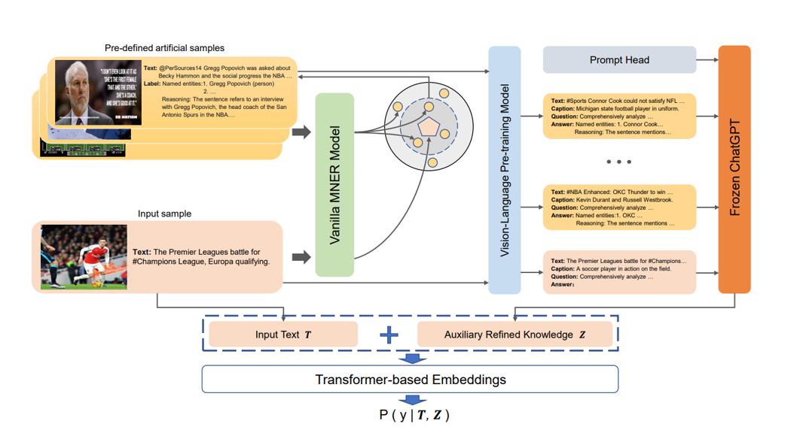

|
Prompting ChatGPT in MNER: Enhanced Multimodal Named Entity Recognition with Auxiliary Refined Knowledge (EMNLP 2023)
[PDF], [Code],
[Video], [Poster]
Multimodal Named Entity Recognition (MNER) on social media aims to enhance textual entity prediction by incorporating image-based clues. Existing studies mainly focus on maximizing the utilization of pertinent image information or incorporating external knowledge from explicit knowledge bases. However, these methods either neglect the necessity of providing the model with external knowledge, or encounter issues of high redundancy in the retrieved knowledge. In this paper, we present PGIM --- a two-stage framework that aims to leverage ChatGPT as an implicit knowledge base and enable it to heuristically generate auxiliary knowledge for more efficient entity prediction. Specifically, PGIM contains a Multimodal Similar Example Awareness module that selects suitable examples from a small number of predefined artificial samples. These examples are then integrated into a formatted prompt template tailored to the MNER and guide ChatGPT to generate auxiliary refined knowledge. Finally, the acquired knowledge is integrated with the original text and fed into a downstream model for further processing. Extensive experiments show that PGIM outperforms state-of-the-art methods on two classic MNER datasets and exhibits a stronger robustness and generalization capability. |
|  |
|
LLMs as Bridges: Reformulating Grounded Multimodal Named Entity Recognition
[PDF]
Grounded Multimodal Named Entity Recognition (GMNER) is a nascent multimodal task that aims to identify named entities, entity types and their corresponding visual regions. GMNER task exhibits two challenging properties: 1) The weak correlation between image-text pairs in social media results in a significant portion of named entities being ungroundable. 2) There exists a distinction between coarse-grained referring expressions commonly used in similar tasks (e.g., phrase localization, referring expression comprehension) and fine-grained named entities. In this paper, we propose RiVEG, a unified framework that reformulates GMNER into a joint MNER-VE-VG task by leveraging large language models (LLMs) as a connecting bridge. This reformulation brings two benefits: 1) It maintains the optimal MNER performance and eliminates the need for employing object detection methods to pre-extract regional features, thereby naturally addressing two major limitations of existing GMNER methods. 2) The introduction of entity expansion expression and Visual Entailment (VE) Module unifies Visual Grounding (VG) and Entity Grounding (EG). It enables RiVEG to effortlessly inherit the Visual Entailment and Visual Grounding capabilities of any current or prospective multimodal pretraining models. Extensive experiments demonstrate that RiVEG outperforms state-of-the-art methods on the existing GMNER dataset and achieves absolute leads of 10.65%, 6.21%, and 8.83% in all three subtasks. |

|